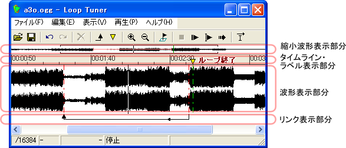
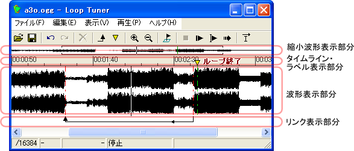
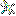

ループチューナ (krkrlt.exe) を起動すると、以下の画面が表示されます (以下の画面は、実際にファイルを読み込んだところ)


- 縮小波形表示部分
- ここには、サウンドの全体を縮小した波形が表示されます。赤い横線はリンク、緑の縦線はラベルを表しています。
クリックをすると、その付近を波形表示部分に表示することができます。ダブルクリックをすると、その位置から再生を開始することができます。
縮小波形の作成には時間がかかるため、サウンドを読み込んだ直後や、ウィンドウの横幅を変更した直後は全てが表示されないかもしれません (バックグラウンドで縮小波形を作成しますので、時間が経つにつれ表示されるようになります)。
- タイムライン・ラベル表示部分
- ここには、タイムラインが表示され、波形のどの位置が、サウンドの先頭からどれほどの時間が経過した位置にあるのかを知ることができます。
また、ラベルの情報もここに表示されます。逆三角形のマークはラベルを表しています。
ラベルをクリックするとラベルを選択することができます。
ラベルをダブルクリックすると、ラベル名を編集することができます。
- 波形表示部分
- ここには、サウンドの波形が表示されます。
[表示|ズームイン]あるいは[表示|ズームアウト]で、波形の拡大や縮小を行うことができます。
波形をクリックすると、その位置に点滅する縦棒が表示されます(これをキャレットと呼びます)。[再生|現在位置から再生] ではこの場所から再生を開始することができます。また、[表示|ズームイン]あるいは[表示|ズームアウト]では、この位置を中心にして拡大や縮小が行われます。
波形上をダブルクリックすると、その位置から再生を開始することができます。
波形が画面に収まりきらない場合は、下部にスクロールバーが表示されます。
波形表示部分に表示される、縦の点線は、ラベルあるいはリンクの位置を表しています。この縦の点線はマウスでドラッグを行うことができ、位置の調整ができます。 - リンク表示部分
- ここには、リンクの情報が表示されます。
リンクは矢印で表示され、矢印の元の部分に再生位置が達したときに、矢印の先の部分に移動する、という意味になります。
点線のリンクは、条件付きリンクを表しています。
リンクをクリックすると、リンクを選択することができます。
リンクをダブルクリックすると、リンクの編集画面を表示することができます。
- [ファイル(F)|開く(O) ...]() ショートカットキー: Ctrl+O
- 操作対象となるサウンドファイルを開きます。すでに開かれているファイルに変更が加わっていた場合、変更を保存するかどうかを尋ねるダイアログボックスが表示されます。
- [ファイル(F)|保存(S)]() ショートカットキー: Ctrl+S
- 現在の内容をファイルに保存します。ファイル名は、PCM形式のファイル名の最後に .sli がついたファイル名 ( たとえば、se001.wav に対しては se001.wav.sli ) になります。
- [ファイル(F)|終了(X)]
- ループチューナを終了します。すでに開かれているファイルに変更が加わっていた場合、変更を保存するかどうかを尋ねるダイアログボックスが表示されます。
- [編集(V)|元に戻す(U)]() ショートカットキー: Ctrl+Z
- 最後の編集を取り消し、直前の状態に戻します。
- [編集(V)|やり直し(R)]()
- 「元に戻す」で元に戻した変更を、再度適用します。
- [編集(V)|削除(D)](
 ) ショートカットキー: Del
) ショートカットキー: Del - 現在選択されているアイテムを削除します。
- [編集(V)|新規リンクを作成(J)]()
- 新しいリンクを作成します。リンクは、前回クリックした場所をリンクの先とし、前々回クリックした場所をリンクの元として作成されます。従って、リンクを作成したい場合は、まずリンクの元となる場所をクリックし、次にリンクの先となる場所をクリックし、最後にこのメニューを選択してください。
- [編集(V)|新規ラベルを作成(J)]()
- 新しいラベルを作成します。
- [編集(V)|リンクの編集(T) ...]()
- 現在選択されているリンクを調整するための画面を開きます。
- [編集(V)|再生位置にラベルを作成(A)]() ショートカットキー: A または S
- 現在の再生位置にラベルを作成します。ラベルをキーパンチで作成することができます。A キーだけの連打が難しい場合には S キーも使うことができますので、A キーと S キーを交互に押すと楽です。
- [編集(V)|全てのラベルを削除(Q)]() ショートカットキー: Ctrl + Q
- 全てのラベルを削除します。
- [表示(V)|ズームイン(I)]() ショートカットキー: I
- 波形を拡大します。
- [表示(V)|ズームアウト(O)]() ショートカットキー: O
- 波形を縮小します。
- [表示(V)|再生位置に画面を追従(F)]() ショートカットキー: F
- 再生位置に画面を追従します。
- [表示(V)|ツールバーの表示(T)]
- ツールバーの表示/非表示を切り替えます。
- [表示(V)|フラグの表示(G)]()
- フラグ編集バーを表示します。
フラグ編集バーには16個の編集欄があり、それぞれがフラグを表しています。値を変更することもできます。編集欄をダブルクリックすることにより、数値が 0 であれば 1 に、0 であれば 1 にする(トグルする)ことができます。
左端の[C]ボタンをクリックすると、全てのフラグを 0 にすることができます。
- [表示(V)|縮小波形の表示(E)]
- 縮小波形の表示/非表示を切り替えます。
- [表示(V)|ステータスバーの表示(S)]
- ステータスバーの表示/非表示を切り替えます。
- [再生(P)|停止(Q)](
 ) ショートカットキー: Q
) ショートカットキー: Q - 再生を停止します。
- [再生(P)|初めから再生(P)](
 ) ショートカットキー: P
) ショートカットキー: P - サウンドの初めから再生を開始します。
- [再生(P)|現在位置から再生(C)]() ショートカットキー: Space
- キャレット位置からサウンドの再生を開始します。
- [再生(P)|リンクを無視して再生(G)]() ショートカットキー: G
- この項目がチェックされている(押し込まれた表示になっている)状態では、全てのリンクを無視して再生します。再生位置がリンクの元の位置に達しても、リンクをたどりません。
- [ヘルプ(H)|ヘルプ(H)]
- ヘルプを表示します。
- [ヘルプ(H)|ループチューナについて(A)]
- ループチューナの著作権情報とバージョン情報を表示します。